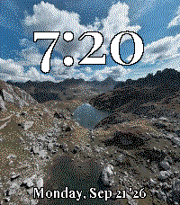
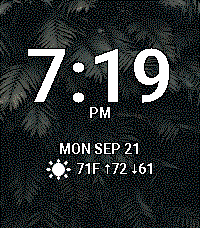
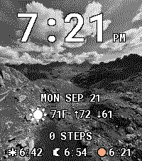

Your photos. Your type. Your time.
Get Organik Time on the Pebble App Store
Organik Time turns your photos into a watchface that feels like yours. Pick a background, choose your typography, arrange the information you want, and save whole designs as presets.



Choose a background
In Organik Time’s settings in the Pebble phone app tap Choose photo to use the phone's native picker.
If the picker doesn't open (some Android Pebble app versions), use the browser importer:
Open photo importer Choose a photo, tap Copy photo, paste back into settings, tap Import photo. Processing happens locally on your phone.Presets
Save current as preset captures the current preview and complete settings immediately — photo, all adjustments, fonts, colors, clock/date, layout, four data rows, weather preferences and tickers.
Save and apply is the single finishing action: it commits preset creations/deletions, closes the editor and transfers the background to the watch.
Back before finishing discards the current session. Tap a saved screenshot to load it for editing. A green outline and ✓ Loaded badge identify the last loaded preset. It is sent to the watch only when you tap Save and apply.
Editing
- Photo quality: Photo = 100% dithering + 20% sharpening; Artwork = off. Sliders for dithering, sharpening, shadow lift (0–100%) and contrast (−50…+50) with live preview.
- Dimming: 0–100% in 1% steps, live preview.
- Black & white: four-level grayscale (Pebble color screen).
- Zoom: 100–300% with live preview; Focus X/Y place the crop.
20 bundled fonts
Roboto, Open Sans, Lato, Montserrat, Oswald, Raleway, Merriweather, Playfair Display, Nunito, Poppins, Roboto Slab, PT Sans, PT Serif, Source Sans 3, Source Serif 4, Inconsolata, Quicksand, Barlow Condensed, Rubik, Roboto Mono — all freely licensed and used for the phone preview too.
Time & details
Time sizes: Small (42 px), Large (56 px), Extra large, Maximum — fitted per font so AM/PM never clips. Detail sizes: Small (≤14 px), Large (≤18 px), Maximum (≤22 px); lines shrink independently to fit weather, stocks, health, solar and date.
Text color: all 64 Pebble Time 2 colors with a contrasting outline.
Information rows
Four interchangeable rows: Hidden, Date, Weather, Steps, Heart rate, Stock, or Sunrise / sunset / evening golden hour.
Drag any row by its handle to reorder — keyboard arrow keys also work. Up to four distinct stock rows.
Data sources & refresh
- Weather: Open-Meteo over the internet (city or phone location), normally refreshed every 30 minutes.
- Stocks: Yahoo Finance quotes over the internet, normally refreshed every 15 minutes; quotes may be delayed.
- Health: Pebble Health readings (steps, heart rate), redrawn on health updates and clock ticks. Heart rate is the latest available reading; the face does not force continuous measurement.
- Solar: calculated on the phone from the weather location.
Privacy
Your photo is processed locally on your phone and is never uploaded. The face uses no analytics. Weather, city search and stock lookups use Open-Meteo and Yahoo Finance. Weather requests include the selected location; stock requests include the ticker or search text. These providers receive normal connection metadata. Health readings stay on the watch. The optional browser importer is hosted by GitHub Pages; its hosting service receives normal website requests, but the image is processed in your browser. Clipboard contents may sync according to your phone’s settings.
Photo size
Use 200 × 228 px (or any larger image with the same 50:57 portrait ratio). Prefer PNG for direct pixel art, JPEG for photos. Keep the subject centered and leave quiet areas behind the clock and lower rows.
Storage & reconnecting
Presets are stored locally in the Pebble phone app, with no fixed count limit beyond available storage. Clearing app data can remove them. Keep your own photo backups.
If the watch restarts while disconnected, its photo stays black until the phone reconnects and restores it. A failed photo transfer keeps the previous image.
Support
Report an issue. Include your watch model, phone OS, Pebble app version and what happened. Please do not post private photos or health information.